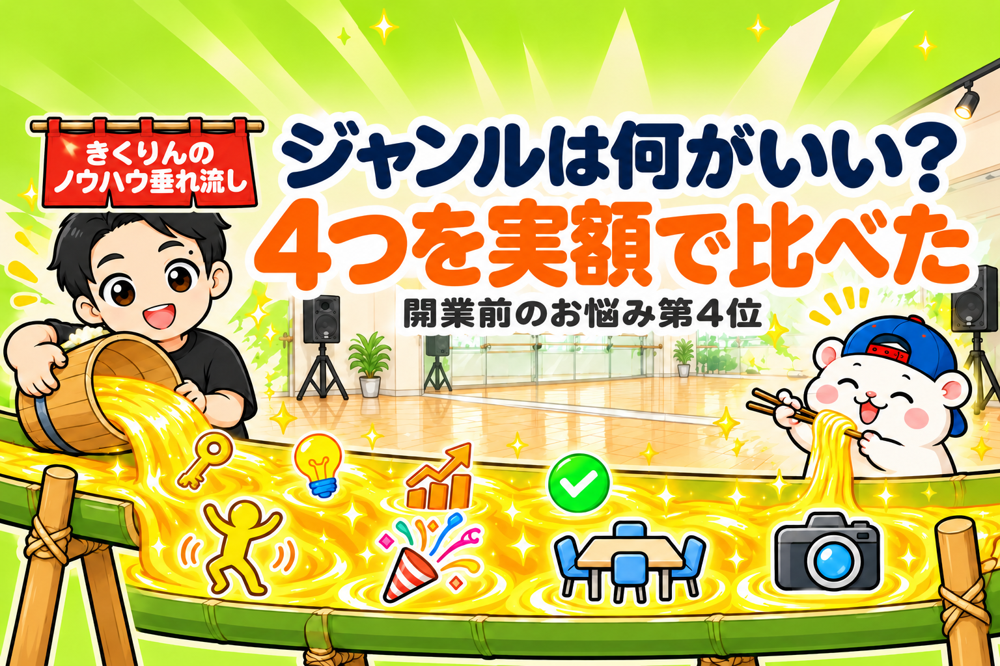

レンタルスペースのジャンルは、先に決めてから、物件を探します。
ぼくはこれまで23店舗を、自分のお金で出店して、運営してきました。
そのやり方を、そのまま書きます。
ダンススタジオは、毎月15万円くらい。
小さな貸し会議室は、4万円くらい。
同じ人がやっても、ジャンルでこんなにちがいます。
ただ、探していると、ジャンルには合わないけど、いい物件に出会うことがあります。
そのときは、物件に合わせてジャンルを変えます。
| 順位 | 開業前の悩み |
|---|---|
| 1位 | 物件が見つからない |
| 2位 | 何から始めればいい? |
| 3位 | 本当にもうかるの? |
| 4位 | どのジャンルがいい? |
レンタルスペースをこれから始める人の悩みで、4番目に多かったのが「どのジャンルがいい?」でした。
決め方は、3ステップです。
- 先にジャンルを決める
- そのジャンルに合う物件を探す
- 合わないけど、いい物件に出会ったら、ジャンルを変える
この記事を書いた人

この記事は、ダンス・パーティー・会議室・撮影の4つで、23店舗を出してきたきくりんが書いています。
4つとも自分で運営しているので、同じ目線で比べられます。
4つのジャンルを、ぼくの店で比べる
| ジャンル | 利益 | 始めるお金 | 元が取れる早さ | 予約の伸び | まねされにくさ |
|---|---|---|---|---|---|
| ダンス | ◎ | △ | ◯ | ◎ | ◎ |
| パーティー | ◯ | ◯ | △ | ◯ | △ |
| 小さな会議室 | △ | ◎ | ◎ | ◯ | △ |
| 撮影 | ◯ | △ | △ | △ | △ |
◎とてもいい ◯いい △弱い
ダンスが、いちばん利益が出ました。
平日もよく埋まります。
小さな会議室は、利益は小さめ。
でも、始めるお金が少なく、元も早く取れます。
撮影は、写真や世界観しだいで、予約が大きく変わるジャンルです。
部屋づくりにこだわれる人ほど、伸ばしやすくなります。
予約の伸びも、ジャンルでちがいます。
ダンスやヨガは、3年で3倍近く。
撮影は、ほぼ横ばいです。

「どのジャンル?」と聞く人が、本当に知りたいこと
| 調べた場所 | 数 |
|---|---|
| 運営者コミュニティ | 始める前の30人 |
| Yahoo!知恵袋 | 質問20ページ |
| ココナラなどの相談 | 出品と評価 |
| 検索で上に出るページ | 38ページ |
「どのジャンルがいい?」と聞く人の声を、読み直しました。
「人気のジャンルはどれ?」と聞いた人は、ほとんどいません。
多かったのは、この2つです。
- この好きなことで、大家さんの許可は通る?
- この駅で、借りる人はいる?
ところが、ネットの答えは、ジャンルを紹介して「あなたしだい」で終わるものばかり。
同じ人がジャンルを比べた数字も、見つかりませんでした。
運営している人の後悔で多かったのは、「ジャンルと物件を、なんとなく一緒に決めてしまった」です。
だから、ジャンルと物件は、順番に決めます。
ステップ1: 先にジャンルを決める
| まねされにくい | まねされやすい |
|---|---|
| ダンス | 小さなパーティー |
| 大きな部屋 | 小さな会議室 |
| 推し活の撮影 |
最初は、物件探しではなく、ジャンル決めです。
見るのは、2つだけ。
1つ目は、まねされにくいか。
始めやすいジャンルは、だれでも始めやすいジャンルです。
あとから近くに、同じような部屋がどんどん増えます。
例えば、推し活の撮影スタジオは、ここ数年で一気に部屋が増えました。
だから、写真や世界観で選ばれる工夫が欠かせません。
ダンスは、音と振動があるので、出せる物件が少ない。
大きな部屋は、お金がかかる。
だから、まねされにくいんです。
2つ目は、その駅で予約が入っているか。
ポータルサイトで「駅名×ジャンル」を検索します。
人気店の予約カレンダーを、1週間見てください。
平日の夜まで埋まっていれば、その駅には需要があります。
まねされにくさの話は、こちらにまとめています。

ステップ2: そのジャンルに合う物件を探す
| ジャンル | 探す物件 |
|---|---|
| ダンス | 1階・地下など、下に響かない部屋 |
| パーティー | 隣室に音が響かない部屋 |
| 会議室 | 駅から近い部屋 |
| 撮影 | エレベーターがある部屋 |
ジャンルが決まったら、それに合う物件を探します。
例えば、ダンスなら、ジャンプの振動が下に響かない部屋だけ。
借りる前に、音を出して、跳んでみて確かめます。
どのジャンルでも、いちばん大事なのは大家さんの許可です。
許可がないと、借りた部屋を人に貸すことはできません。
許可の取りやすさも、ジャンルでちがいます。
会議室は取りやすく、ダンスは取りにくい。
問い合わせでは「何に使うか」まで伝えて、書面でもらいましょう。
物件の探し方は、こちらにまとめています。

ステップ3: 合わないけど、いい物件に出会ったら
| 出会った物件 | 合うジャンル |
|---|---|
| 駅近で広いけど、2階 | 会議室・パーティー |
| 駅前で安いけど、小さい | 会議室 |
| 暗い地下 | ダンス |
探していると、ジャンルには合わないけど、いい物件に出会うことがあります。
駅に近い、家賃が安い、広い。
こういう物件は、めったに出ません。
そのときは、見送らずに、ジャンルを変えます。
例えば、ダンスで探していて、駅前の広くて安い2階の部屋が出てきたとします。
下に人がいるので、ダンスはできません。
でも、会議室やパーティーなら、この広さを活かせます。
ジャンルを変えたら、ステップ1と同じように、その駅の予約を見ておきます。
先にジャンルを決めておくと、物件を見る目が育ちます。
だから、合わない物件に出会っても、「これなら何に使えるか」がすぐ分かります。
好きなジャンルで始めたい人へ
ダンスの先生、カメラマン、ボードゲーム好き。
やりたいことが先にある人も多いです。
その場合は、ステップ1はもう決まっています。
あとは、この3つを先に確かめます。
- 大家さんの許可は通るか
- その駅に、同じジャンルで予約が入っている店があるか
- やりたいのか、もうけたいのか
3つ目が、意外と大事です。
運営している人の後悔で多かったのが、「やりたいのか、もうけたいのか、考えなかった」でした。
自分の練習にも使うなら、もうけが小さくても満足できるかもしれません。
もうけたいなら、まねされにくく、予約が入っているジャンルを選びましょう。
まとめ: ジャンルを先に決めて、物件で調整する
どのジャンルにするかは、3ステップで決めます。
- 先にジャンルを決める
- そのジャンルに合う物件を探す
- 合わないけど、いい物件に出会ったら、ジャンルを変える
まずは今日、ポータルサイトで「あなたの駅名×気になるジャンル」を検索してみてください。
全体の順番から知りたい人は、こちらからどうぞ。


▼レンタルスペースの始め方は、ぜんぶ1冊にまとめてあります
物件選び・収支の計算・開業・運営・拡大まで。累計23店舗の経験を、全9部と付録15点のWeb教材に書きました。
第0部は登録なしで全文読めます。
『レンタルスペース経営の教科書』

販売価格は3部売れるごとに2,000円ずつ値上がりします（上限あり）。内容・最新価格は販売ページをご確認ください。
▼もう1つの副業、AI社員だけのeBay輸出店の実録🐹

▼ブログ(レンスペ×eBay、全記事まとめ)